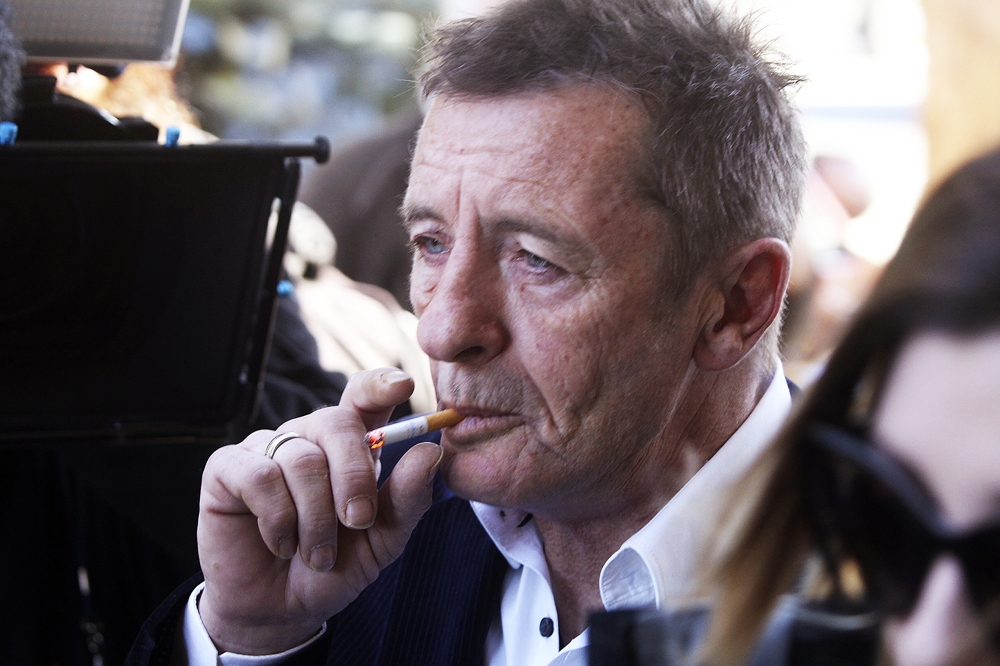

AC DC Biography.
AC/DC (stylised as ACϟDC) are an Australian rock band formed in Sydney in 1973 by Scottish-born brothers Malcolm and Angus Young.Although their music has been variously described as hard rock, blues rock, and heavy metal,the band themselves call it simply "rock and roll".
AC/DC underwent several line-up changes before releasing their first album, 1975's High Voltage. Membership subsequently stabilised around the Young brothers, singer Bon Scott, drummer Phil Rudd, and bassist Mark Evans. Evans was fired from the band in 1977 and replaced by Cliff Williams, who has appeared on every AC/DC album since 1978's Powerage. In February 1980, Scott died of acute alcohol poisoning after a night of heavy drinking.The group considered disbanding but elected to stay together, bringing in longtime Geordie vocalist Brian Johnson as Scott's replacement.
The band's eighth studio album, For Those About to Rock We Salute You (1981), was their first album to reach number one in the United States. Prior the release of 1983's Flick of the Switch, drummer Rudd left the band and was replaced by Simon Wright, being in turn replaced by Chris Slade in 1989. The band experienced a commercial resurgence in the early nineties with the release of 1990s The Razors Edge. Rudd returned to the band in 1994, replacing Slade and appearing on the band's next five albums. Their fifteenth studio album Black Ice was the second-highest-selling album of 2008, and their biggest chart hit since For Those About to Rock, eventually reaching.
Brian Johnson

Here you can find the latest news, photos and videos from Brian’s racing and buy the audiobook of his autobiography, Rockers & Rollers.
Cliff Williams

Cliff Williams back in AC/DC for the new album "Power Up" Only weeks ago Brian Johnson confirmed he was back with the band.
Angus Young

He’s more in the Bon style–the rock & roll character. And he’s got his own folksy humor. He’s pretty quick with a quip. He’s more in the Bon style.
Phil Rudd
pleads guilty to drug possession & threatening to lill. Rudd was caught with a whole lotta weed and some meth while being arrested,threatening.